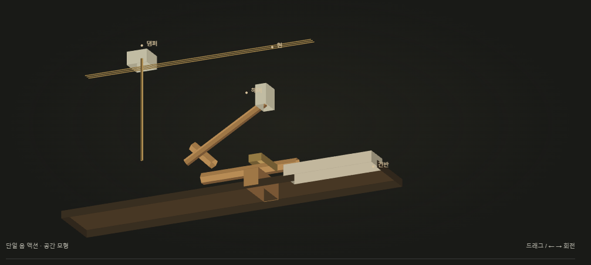
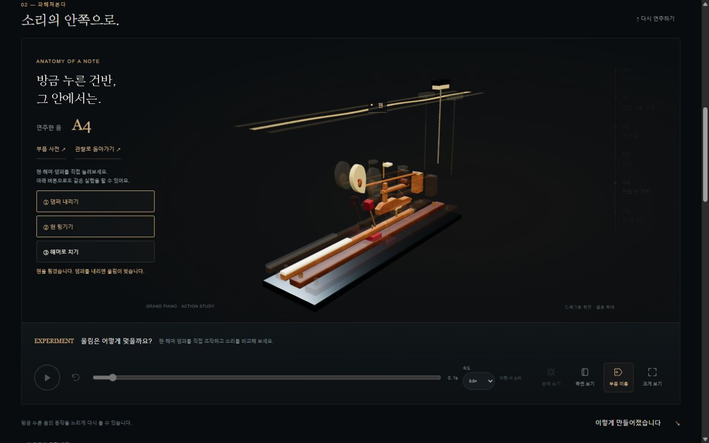

일반적인 그랜드피아노 액션을 참고해 직접 만든 3D 관찰 모형입니다. 곡면 부품, 고정 회전축, 잭 이탈 → 타현 → 반발과 댐퍼 분기를 표현합니다. 특정 악기의 실측 CAD나 접촉·공명 물리 시뮬레이션은 아닙니다. 재생 시간은 이해를 위한 확대이며, 실제 타건의 고속 운동을 측정한 기록이 아닙니다.
02 — 조금 더 굳이 · FOUR QUESTIONS
소리 하나가 남긴, 네 가지 궁금증.
방금 연주한 C4로 조건을 바꿔봅니다. 아직 연주하지 않았다면 C4로 시작합니다.
발견한 질문 0 / 4
QUESTION 01 · TOUCH
세게 치면, 소리만 커질까요?
같은 건반을 가볍게, 그리고 힘 있게 쳐보세요. 음높이를 바꾸지 않고 세기와 배음의 비중을 바꿔 듣습니다.
두 소리를 모두 듣고 차이를 비교해보세요.
아직 두 소리를 비교하지 않았습니다.
발견 01
같은 음이어도, 표정은 달라집니다.
해머의 타격 세기는 울림의 크기뿐 아니라 배음의 비중에도 영향을 줍니다. 이 실험에서는 세게 칠수록 높은 배음이 상대적으로 더 살아나도록 합성했습니다. 실제 타건 속도를 측정한 것이 아닌 비교용 소리입니다.
시각 진폭은 비교를 위해 과장했습니다. 실제 녹음의 파형이나 측정값이 아닙니다.
QUESTION 02 · ESCAPEMENT
해머가 현에 붙어 있으면 어떨까요?
소리를 만드는 부품이 계속 닿아 있으면 더 잘 울릴 것 같지만, 현은 자유롭게 진동할 공간이 필요합니다.
타격 후 떨어지는 경우와 접촉을 유지하는 경우를 비교해보세요.
두 조건에서 울림이 남는 길이를 들어보세요.
발견 02
잘 치는 것만큼, 잘 떨어지는 것도 중요합니다.
해머가 현을 친 뒤 떨어져야 현이 자유롭게 진동할 수 있습니다. 앞에서 본 잭의 이탈은 건반을 누른 채로도 해머가 자유롭게 움직이도록 하는 액션의 일부입니다. 접촉 유지 조건은 감쇠를 크게 만든 가상 비교입니다.
안재현 디렉터가 정한 출발점은 “브랜드 소개보다 체험이 먼저”였습니다. Yamaha의 액션·발음 원리 자료로 건반, 해머, 현, 댐퍼의 관계를 확인했습니다. 첫 입력을 막지 않도록 사진·대형 모델·음원 다운로드를 기다리는 구성을 제외했습니다.
02 / 하나의 입력, 두 개의 장면
연주한 음을 관찰까지 이어갑니다.
각 건반은 고유한 음 번호를 가집니다. 누름과 뗌을 같은 상태에 기록해 건반 표시, 소리, 해머와 댐퍼 모형에 전달합니다. 마지막 음과 누른 시간을 남겨 다음 장면에서 다시 확인합니다. 화면을 옮겨도 다른 설명용 음으로 바뀌지 않습니다.
03 / 모델링과 오디오
가볍게 시작하고, 한계를 드러냅니다.
기구는 Three.js의 WebGL 렌더링으로 직접 구성했습니다. 곡면 해머와 위펜, 회전축을 나누고 목재 결·펠트·금속 표면을 코드로 만들었습니다. 실측 CAD 대신 작동 순서를 관찰하는 모형을 택했습니다. 소리는 Web Audio로 여러 배음을 합성하고, 누르는 동안 감쇠시키며 손을 뗄 때 더 빠르게 줄입니다. 실제 그랜드피아노 녹음이나 정밀한 물리 음원은 아닙니다. 키보드·터치로 실제 타건 속도를 측정할 수 없어 세기는 일정합니다.
04 / AI와의 협업 · 현재 진행형
작동 시제품에서 악기로 가는 일.
경험 구조와 미감은 안재현 디렉터가 정하고, Codex가 상태 연결·입력 처리·소리 합성·모형 렌더링을 구현했습니다. 처음에는 단순한 막대와 상자로 내부 기구를 그렸지만, 악기의 질감과 동작을 읽기 어렵다는 피드백을 받았습니다. ChatGPT에 기구 도면·조작계·PC 및 모바일 화면을 의뢰했고, 잘못된 부품명과 잭 이탈 순서를 정정했습니다. 받은 이미지를 배경으로 붙이는 대신, 각 부품과 조작을 실제 코드로 다시 구성했습니다. 고품질 녹음 음원, 정교한 그랜드피아노 전체 모델, 공명·조율·고장·수리는 앞으로 검증할 과제입니다. 아직 겪지 않은 실패담이나 완성되지 않은 기능을 제작 성과로 쓰지 않습니다.

처음 — 단순 공간 도형으로 작동 순서부터 연결했습니다.

수정 후 — 부품 형상·재질·조작을 실제로 연결했습니다.
05 / 실패를 남기는 이유
그림이 정교해지는 것만으로는 부족했습니다.
첫 시도
막대와 상자로 원리를 표현했습니다. 작동 순서는 보였지만, 해머의 모양과 부품 사이 관계를 읽기 어려웠습니다.
바꾼 방법
부품별 곡면과 축을 만들고, 목재·펠트·금속을 나눴습니다. GPT 시안의 잘못된 라벨과 잭 이탈 순서를 먼저 고쳤습니다.
실제 연결
관찰 재생의 타현 순간에 같은 음이 나고, 직접 실험에서는 현을 튕기거나 댐퍼를 내려 울림을 멈춥니다.
아직 남은 일
실측 기구의 접촉·반복 타건 검증, 녹음 음원과 공명, 실제 휴대전화의 음질·입력 지연을 확인해야 합니다.
외부 모델·사진·녹음 음원을 사용하지 않았습니다. Three.js는 MIT 라이선스로 사용하며 원문을 vendor/LICENSE.txt에 보관했습니다. 연주 상태는 이 페이지의 메모리에만 유지됩니다. 새로고침하면 초기화됩니다. 모바일은 C4~C5, 넓은 화면은 C4~C6 범위를 제공합니다.